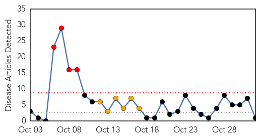

Hepatitis
30-Day Web Trend
4 alerts, 6 warnings

30-Day Twitter Trend
0 alerts, 0 warnings

Article Locations
Article Confidences

Top Articles:
Top Tweets:
-
No tweets found for Nov 01, 2015
Influenza
30-Day Web Trend
1 alerts, 0 warnings

30-Day Twitter Trend
2 alerts, 0 warnings

Article Locations

Article Confidences

Top Articles:
- 0.999
- Daily Checkup: Flu shots work
- 0.997
- What You Need to Know About This Year's Flu Season
- 0.991
- Time is here for flu shot
- 0.989
- Wake up call
- 0.981
- Public health studies raise questions about impact of statins on flu vaccination in seniors
- 0.976
- Statins Knock Down Flu Vaccine's Effectiveness
- 0.895
- Today's stories from newspapers in Flamborough
- 0.848
- Today's stories from newspapers in Belleville Region
- 0.848
- Today's stories from newspapers in Caledon
- 0.599
- Line blurs between animal and human health
Top Tweets:
-
No tweets found for Nov 01, 2015